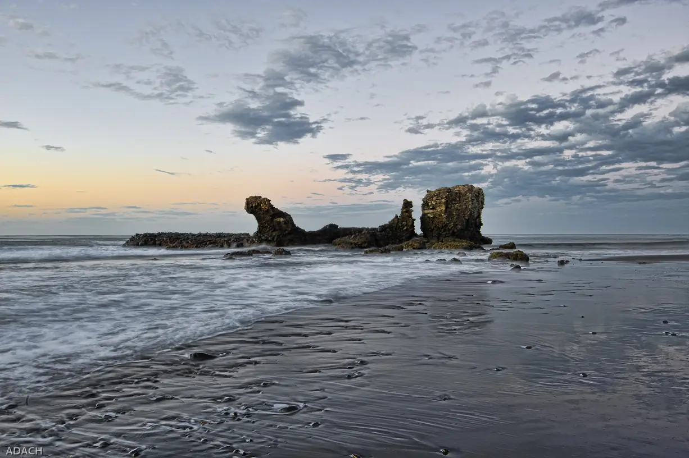

Playa El Tunco
La Libertad, Salvador · surf, bodyboard

Plage de galets et de sable sombre de la côte de La Libertad, reconnaissable à son rocher en forme de cochon, « el tunco ». Plusieurs pics de fond de roche et de galets s’y succèdent, avec la droite de Sunzal juste à côté.
- Lieu
- La Libertad, Salvador
- Niveau
- Intermédiaire
- Activités
- surf, bodyboard
- Type d'eau
- Mer / océan
- Coordonnées
- 13.49, -89.38 (position approximative du secteur)
Dangers à connaître
- Fonds de galets et de roche : chaussons conseillés à marée basse.
- Courants forts près de l’embouchure et des rochers.
Le conseil d'Ocean Buddy
Les jours de grosse houle, laisse les pics de roche aux surfeurs du coin et essaie Sunzal, plus tolérant.
Ouvrir dans Ocean Buddy Télécharger sur l'App Store
Source : Fiche Ocean Buddy · septembre 2026 · à vérifier localement.